Steps turned into minutes
Behind? It says by how much and how long a walk fixes it.
843 behind · walk 9 min
A step tracker that tells you if you are on pace, and how long to walk if you are not.
For iPhone and Apple Watch. It learns your usual day from your last 30 days, so it only says you are behind when you are behind your own normal.
Am I on pace for today? If not, walk 9 minutes.
In OnPace you design a small character that looks like you. Start one here. It takes over the walk at the top of this page.
Glasses, beards, outfits, poses and more are waiting in the app.
Take it for a walkBehind? It says by how much and how long a walk fixes it.
The time you reach your goal at today's pace, or how short you would fall.
The number flips from steps taken to steps left, then flips back.
Your own 24-hour curve, built from your last 30 days of steps.
Finished Apple Watch workouts show up with their steps. Or start a session: a hike, a dog walk, a theme park day.
Pick your skin tone, hair, outfit, glasses and colors. It walks when you walk, celebrates at your goal and slumps when you are behind.
Clean minimal, 16-bit adventure, or Cozy pastel in 8 color sets. One of them is Night red. Your watch follows your phone.
The whole app and watch in red on black. On Apple Watch it turns on by itself after sunset.
Three widgets: steps, steps left, and walk to catch up. No app to open.
Days at goal, your average, and a streak that counts today once you hit it.
A small widget with today's steps, so you do not even need to open the app.
OnPace reads your steps from Apple Health and keeps everything on your iPhone and Apple Watch.
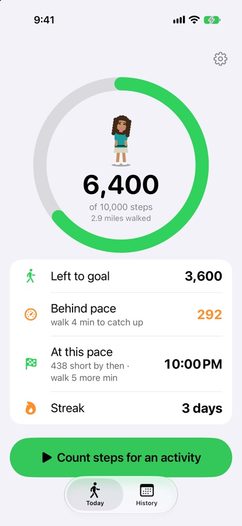
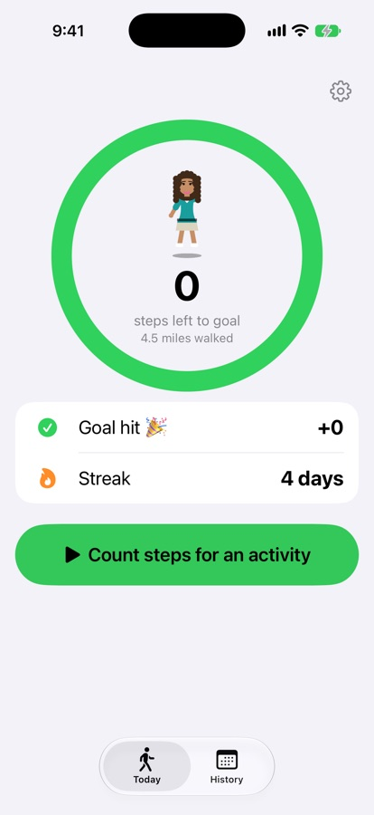
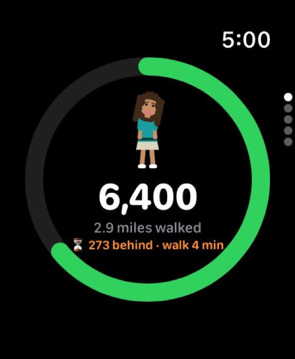
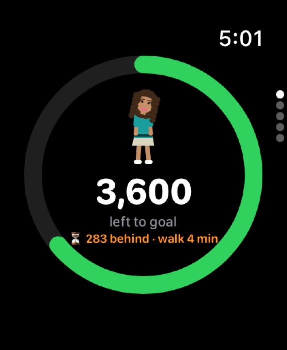
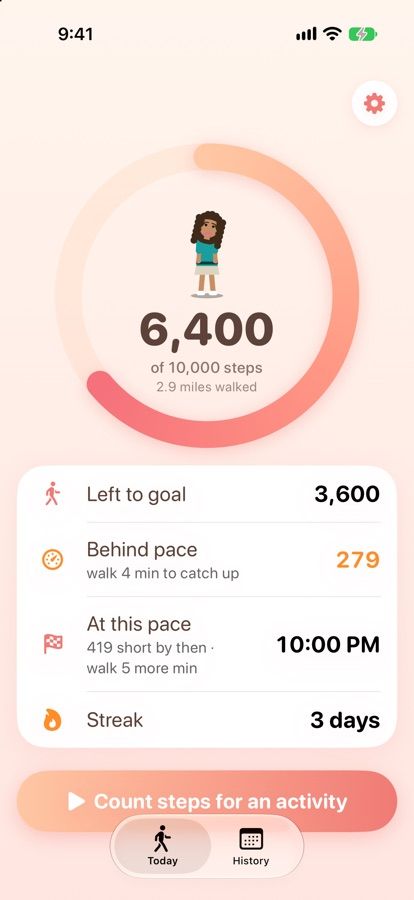
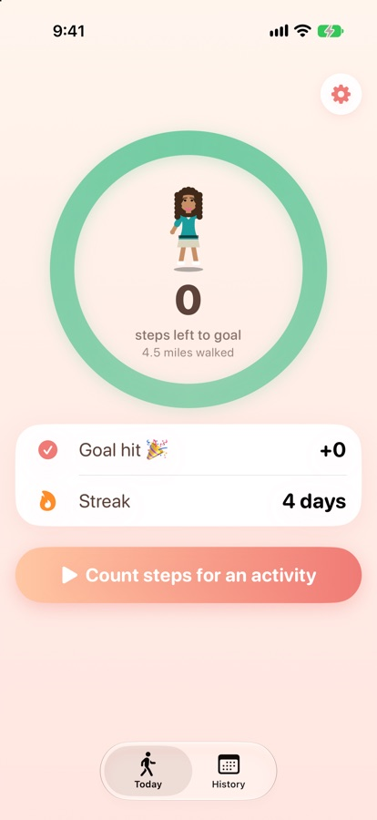
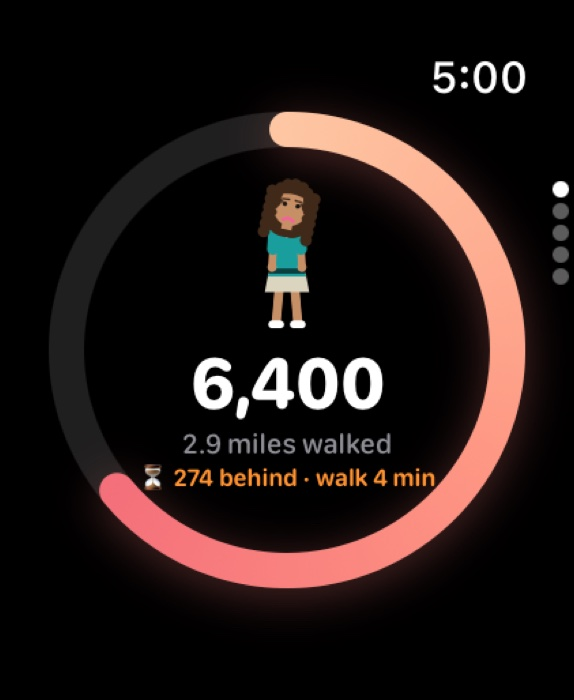
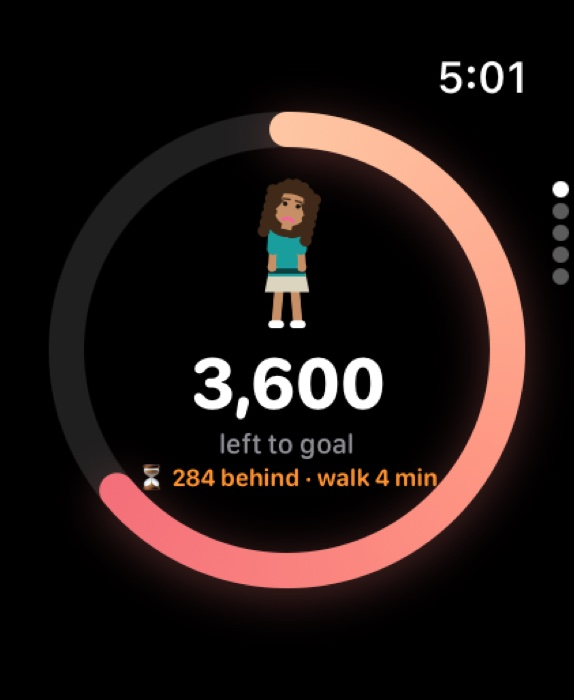
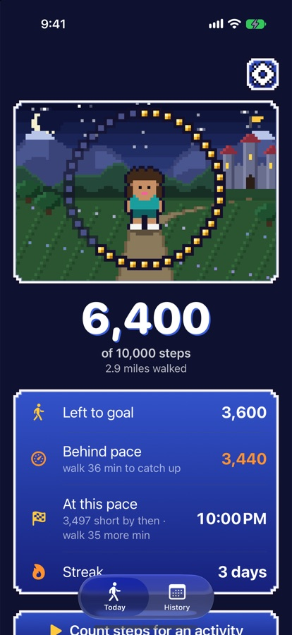
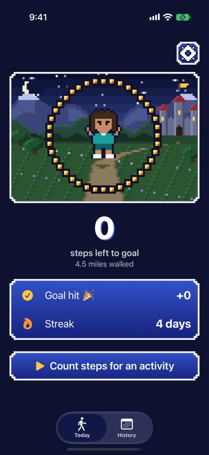
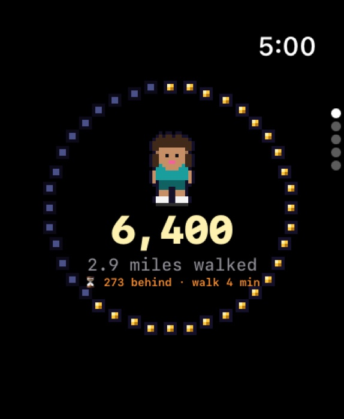
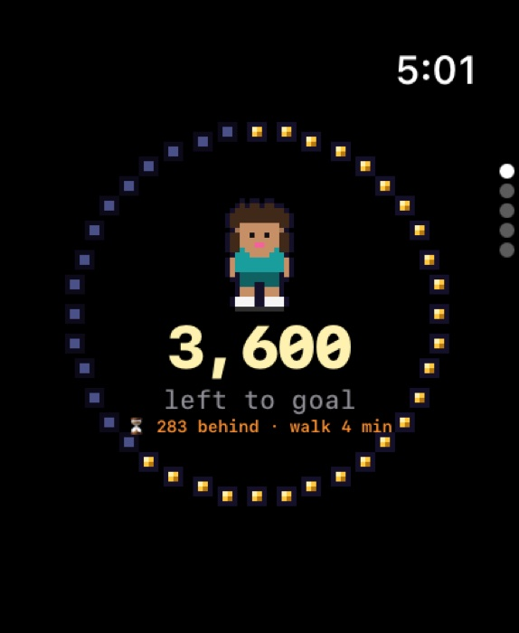
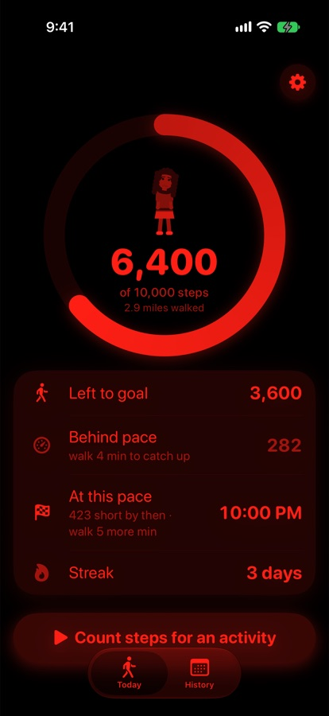
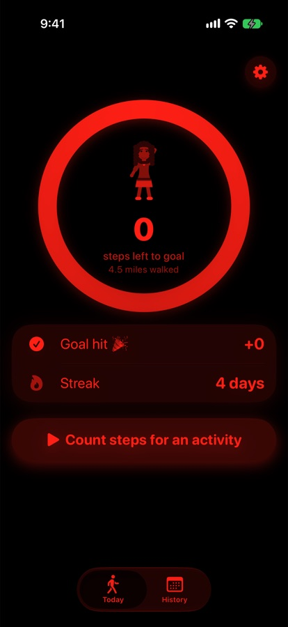
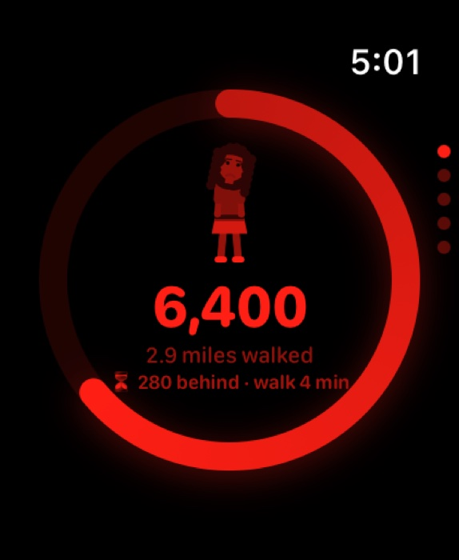
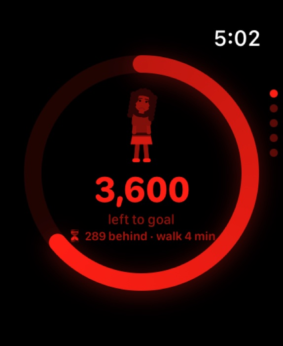
Stay on pace.